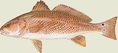

Background
Red drum (Sciaenops ocellatus) is a member of the family Sciaenidae. Also known as channel bass, redfish, bull redfish, drum, puppy drum and spottail, red drum is one of 13 species of sciaenids that occur in the Cape Hatteras region. The family includes the commercially and recreationally important sea trout, spot, croaker, kingfishes, silver perch and black drum. Red drum are not often confused with other sciaenids, however, since they grow to a much larger size than all the other species except for the black drum. They also have a distinctive silvery coloration tinged with a coppery reddish-brown, and a large black spot at the base of the tail. The largest recorded red drum was 59 inches and 98 pounds, and the fish can live as long as 35 years.
Red drum are found from the Gulf of Maine to the northern coast of Mexico, but are most commonly found from south of the Chesapeake Bay to Cape Hatteras. Adult red drum occur in the Pamlico Sound from May through November and are abundant in the spring and fall near Hatteras Inlet. Adults travel in large schools often in near-shore marine waters, but a red drum population extends as far north in the Sound as the Pea Island. During mild winters, red drum may over winter in the Sound, but they usually migrate seasonally, moving in schools offshore and southward in the winter and inshore to the north in the spring. Juvenile red drum also move from bays and estuaries to deeper waters of the ocean in response to dropping water temperatures in the fall and winter.
Life Cycle
Male red drum begin maturing at age 1, while females mature at ages 4 to 5 in North Carolina and 2 to 3 farther south.
Red drum are prolific spawners; large females are capable of producing nearly 2 million eggs in a single season.
Spawning occurs in near-shore coastal waters–along beaches and near inlets and passes–from late summer and into the fall.
Eggs spawned in the ocean are carried by currents into estuaries where they hatch.
Young-of-the-year appear in the estuary from August through September and newly hatched larval red drum are carried further by water currents toward fresher, shallower water.
Juvenile drum in these areas feed on zooplankton and invertebrates such as small crabs and shrimp.
Adults primarily feed on fish, crabs and shrimp.
|
|